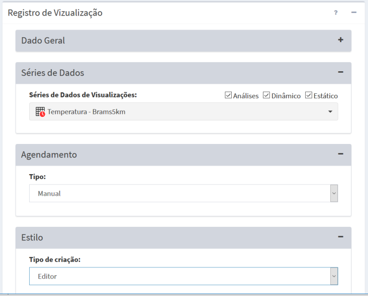

Adicionar Visualização
Para adicionar uma nova visualização é necessário ter um projeto ativo. No menu de opções selecione “Visualizações” para que a lista de visualizações disponíveis seja apresentada na área de trabalho. Clique no botão “ + ” para adicionar uma nova visualização. Utilize o botão “Salvar” para salvar a visualização. Utilize o botão “Salvar e executar” para salvar a visualização e executar a publicação imediatamente, independente de algum agendamento. Não é permitido nomes de visualizações em duplicidade. Botão “Cancelar” volta à tela anterior sem salvar a visualização. A Figura 4.3 mostra a área de trabalho para adicionar nova visualização. Detalhes de cada campo a seguir.

Figura 4.3 – Módulo de Administração: Registro de visualização.
Registro de Visualização:
- Nome: Defina o nome da visualização. O tamanho máximo do nome é de 100 caracteres. Sugerimos nomes curtos pois estes serão utilizados como nome das camadas no módulo de monitoramento.
- Serviço: Escolha o serviço de visualização a ser utilizado.
- Privado: Marque esta opção para visualizações que exigirão acesso restrito a usuários no módulo de monitoramento, portanto, login e senha serão solicitados. Se opção desabilitada, a camada estará disponível no projeto correspondente.
- Descrição: Campo não obrigatório para descrição da visualização. O conteúdo deste campo estará disponível como caixa de texto explicativa da camada disponível do módulo de monitoramento.
- Ativo: Botão ativo significa que qualquer dado dinâmico ou análises que estão agendadas para serem publicadas serão atualizadas no módulo de monitoramento de forma automática ou nos horários pré-definidos. Se opção desabilitada a publicação dos dados será de forma manual, isto é, deverá clicar no botão „ Executar na lista de visualizações disponíveis (ver abaixo Executando uma Visualização).
Registro de Visualização - Série de Dados:
- Séries de Dados de Visualizações: Escolha o dado que deseja publicar na aplicação web de monitoramento. Todos os dados estáticos (vetoriais ou matriciais), dinâmicos (PCD, ocorrências ou matriciais) e resultados de análise (por objeto monitorado, grades ou PCD) estarão disponíveis. Um dado pode ser utilizado em diferentes configurações de visualizações.
- [V] Análises, [V] Dinâmico ou [V] Estático: Utilize estes botões para filtrar a lista de dados disponíveis.
Registro de Visualização - Agendamento: (se dado dinâmico ou análise)
- Tipo: Escolha tipo “Manual”, “Agendamento” ou “Automático”. Se Manual a visualização só será realizada se o usuário utilizar o botão „ Executar na lista de visualizações do item desejado ou salvar com opção de executar. Se “Agendamento” preencha os campos abaixo. Se “Automático” dependerá de coleta de um dado dinâmico ou análise ter sido realizada.
- Unidade de tempo: Escolha um item entre “Segundos, Minutos, Horas e Semanalmente”.
- Frequência (somente se Unidade de tempo for Segundos, Minutos, Horas): Digite um valor de um número inteiro ou fracionado.
- Tempo Inicial
 (somente se Unidade de tempo for Segundos, Minutos, Horas): Clique no campo para escolher o valor de hora, minuto e segundo que será utilizado como referência para executar a visualização.
(somente se Unidade de tempo for Segundos, Minutos, Horas): Clique no campo para escolher o valor de hora, minuto e segundo que será utilizado como referência para executar a visualização. - Agendamento (somente se Unidade de tempo for Semanalmente): escolha uma das opções entre “Domingo, Segunda-feira, Terça-feira, Quarta-feira, Quinta-Feira, Sexta-feira e Sábado”
- Hora (somente se Unidade de tempo for Semanalmente): clique no campo para escolher o valor de hora, minuto e segundo que será executada a visualização.
Registro de Visualização - Estilo :
Utilize os parâmetros dessa aba para definir um estilo de apresentação diferente do padrão. Se não for definido um estilo, os seguintes padrões serão utilizados para:
- Imagem colorida RGB : utiliza a própria composição dos canais R, G e B.
- Imagem monocromática : utiliza paleta em níveis de cinza.
- Imagem colorida codificada: utiliza a própria codificação de cores.
- Grades numéricas: utiliza paleta em níveis de cinza entre o mínimo e máximo dos valores válidos
- Dados vetoriais de pontos: quadrado vermelho para pontos de dados estáticos, ocorrências e PCD.
- Dados vetoriais de linhas: cor azul de linha contínua
- Dados vetoriais de polígonos: preenchimento do polígono em cinza e contorno em preto
- Tipo de criação: Escolha entre as opções: Editor e SLD. Para série de dados de formato matricial, as seguintes opções estarão disponíveis: Days Without Rain, Precipitation, Humidity, Risk of Fire, Temperature (Kelvin), Temperature (Celsius) e Wind.
- Editor: Permite ao usuário personalizar o estilo da visualização de acordo com o Tipo e o Atributo do dado.
- Tipo: Escolha entre as opções Gradiente, Intervalo e Valor. A opção Gradiente estará disponível somente para formato matricial.
- Gradiente: Utiliza uma sequência de tons contínuos entre duas cores atribuídas pelo o usuário, formando uma transição suave entre as cores selecionadas.
- Intervalo: As cores são associadas a diferentes intervalos de valores. É necessário indicar o valor inicial, valor final e a número de intervalos.
- Valor inicial: Deve ser inserido o valor mínimo do dado que será visualizado.
- Valor final: Deve ser inserido o valor máximo do dado que será visualizado.
- Número: Deve ser indicado a quantidade de intervalos que correspondem a número de classes a serem representadas na visualização.
- Precisão: Corresponde a quantidade de casas decimais a serem utilizadas.
- Número da banda (somente se formato matricial): Corresponde ao número da banda da série de dados a ser visualizado. O valor zero corresponde a primeira banda.
- Valor nulo (somente se formato matricial):
- SLD: O SLD é uma especificação do Open Geospatial Consortium (OGC) baseada em um arquivo XML que representa graficamente entidades geográficas (textos, pontos, objetos lineares ou polígonos) SE UTILIZAR ESSE TEXTO PRECISA CITAR FONTE >> (http://www.andersonmedeiros.com/estilos-sld-udig-geoserver-mapserver/). Essa opção permite ao usuário utilizar um estilo escrito em XML, por exemplo, um estilo gerado no QGis ou Geoserver.
- Atributo (somente se formato Tabela com Feições PostgreSQL/PostGIS): Permite ao usuário selecionar um atributo da tabela para gerar a visualização.
- Legenda automática: Essa opção estará disponível apenas se o atributo selecionado possuir no máximo 30 valores correspondentes a identificadores únicos.
- Cor: Existem três formas para se definir uma determinada cor: 1 - utilizando código de cores. Exemplo: Amarelo = #FFFF00FF; 2 - selecionando uma cor na paleta de cores; e 3 - utilizando o sistema RGBA (ver Figura 4.x).
- RGBA: É a sigla para Red, Green, Blue (Vermelho, Verde, Azul) e Alpha. A proporção de cada uma dessas 3 cores juntas obtém-se uma determinada cor. O valor de cada componente (R, G e B) deve ser inteiro e variar de 0 a 255. Por exemplo, a cor amarela é representada por R-255 G-255 e B-0. A componente Alpha é o que determina a faixa de transparência da cor, também utilizam-se valores inteiros variando de 0 (completamente transparente) a 255 (completamente sólido).
- Título: Corresponde ao nome da legenda na visualização, podendo ser editado pelo usuário. Nota: O campo Default corresponde aos valores que estiverem fora do limiar final definido pelo usuário quando o “Tipo” for intervalo, se o “Tipo” for valor, o campo Default corresponde aos valores que não foram definidos. A cor correspondente a esse campo é branca, sólida, ou seja: R-255 G-255 B-255 A-255.
- Valor: Deve ser único.
Created with the Personal Edition of HelpNDoc: Full-featured Kindle eBooks generator